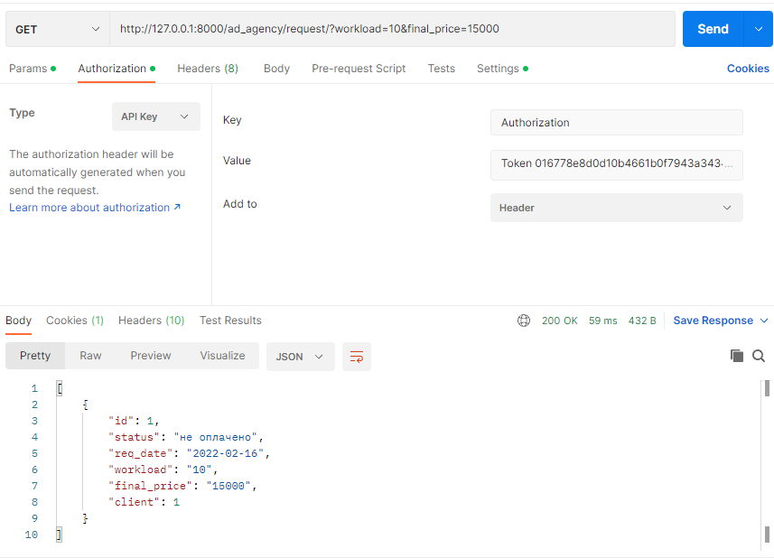

2.1.1 Manual filters
Задание 2.1.1
Реализвать в ручную следующие фильтры (в ручную значит, что Вам необходимо передать в url параметры, далее переопределть метод list или get_queryset, c целью взять параметры из url-адреса, выполнить с ними запрос и вернуть responce пользователю):
- принимает параметр из url-адреса и выводит отфильтрованные данные. (GET, ListAPIView)
views.py
class ClientFilterView(generics.ListAPIView):
serializer_class = ClientViewSerializer
pagination_class = CustomPagination
def get_queryset(self):
queryset = Client.objects.all()
legal_entity = self.request.query_params.get('legal_entity')
if legal_entity:
queryset = queryset.filter(legal_entity=legal_entity)
return queryset
- принимает 2 параметра из url-адреса и выводит отфильтрованные данные. (GET, ListAPIView)
views.py
class ServicesPLFilterView(generics.ListAPIView):
serializer_class = ServicesPLViewSerializer
def get_queryset(self):
queryset = ServicesPL.objects.all()
service_type = self.request.query_params.get('service_type')
price = self.request.query_params.get('price')
if service_type:
queryset = queryset.filter(service_type=service_type)
if price:
queryset = queryset.filter(price=price)
return queryset
- принимает 2 параметра из url-адреса и выводит отфильтрованные данные, если пользователь авторизован и неотфильтрованные, если не авторизован. (GET, ListAPIView)
views.py
class RequestFilterView(generics.ListAPIView):
serializer_class = RequestViewSerializer
def get_queryset(self):
queryset = Request.objects.all()
if self.request.user.is_authenticated:
status = self.request.query_params.get('status')
final_price = self.request.query_params.get('final_price')
if status:
queryset = queryset.filter(status=status)
if final_price:
queryset = queryset.filter(final_price=final_price)
return queryset
